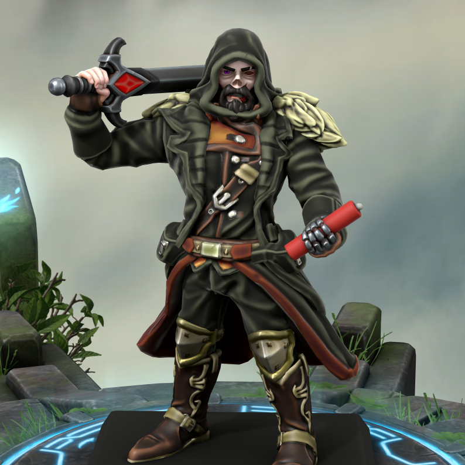

Petruzzo De'Mira
-
Father figure but a mystery for the most part. He is apart of the Ank'Mari and the Templar but for some reason doesn't have the same vendetta that the others have. We are unsure what will happen if he finds out that they are back.
-
Petruzzo is a member of the seekers as well as the Ank'Mari. There is definetely contention in the future.
-
After being killed in a void raid, he mysteriously became undead with no understanding why. To our knowledge, it is because of his line to the Ank'Mari and a prophecy that turned him undead.
-
After becoming undead, his appearance changed a bit. He is now mostly rotten and skeletal and also has 1 blue and 1 purple eye. He usually likes to wear hooded cloaks now...
-
Petruzzo's relationship with Mirabel is... well... complicated. While he has totally regretted his decisions that led to this point, Mirabela still shows the utmost affection toward him.
-
Petruzzo has had a rough past. From being apart of a race who were indoctrinated that they were only good to war and eventually being erraticated to a group of seekers who's leader was murdered that broke the group up.
-
Petruzzo's contention to the Ank'Mari makes things extremely complicated. We know that they will be coming towards our location inevitably, but we can't tell Petruzzo just yet in fear that he will turn to them due to them being his family of old.